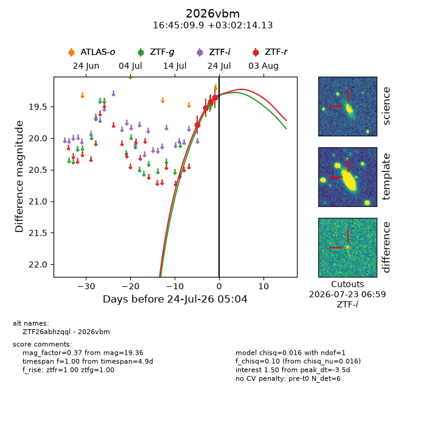
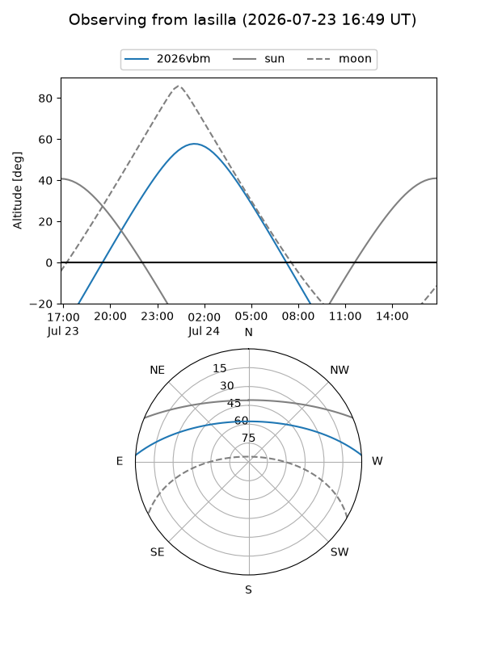
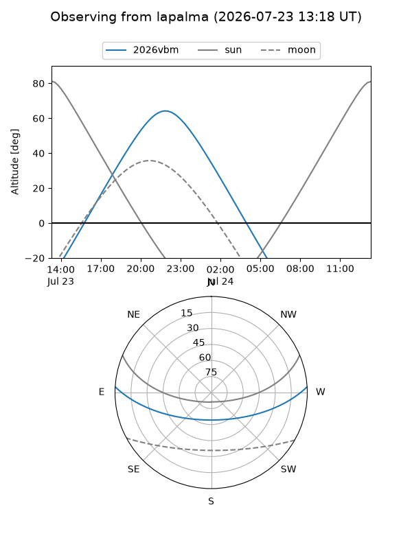
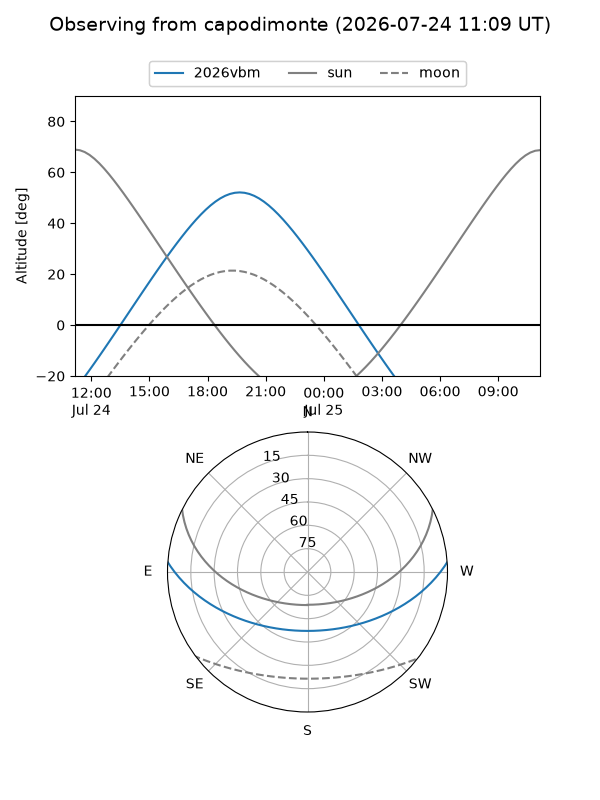
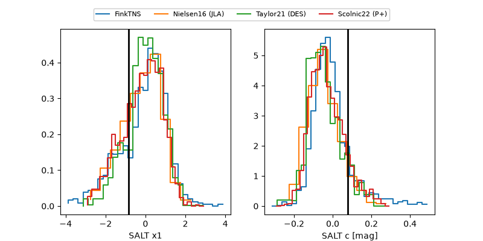

2026vbm
Target 2026vbm at 2026-07-24 05:06
Aliases and brokers:
FINK-ZTF: ztf.fink-portal.org/ZTF26abhzqql
Lasair-ZTF: lasair-ztf.lsst.ac.uk/objects/ZTF26abhzqql
ALeRCE-ZTF: alerce.online/object/ZTF26abhzqql
YSE-PZ: ziggy.ucolick.org/yse/transient_detail/2026vbm
TNS name: wis-tns.org/object/2026vbm
Direct TNS query: direct search
alt names
ZTF26abhzqql (ztf,fink_ztf)
2026vbm (tns,yse)
Coordinates:
equatorial (ra, dec) = 251.2913,+3.03726
equatorial (HMS+DMS) = 16:45:09.91,+03:02:14.13
galactic (l, b) = (20.2652,+29.30287)
Flags:
TNS type: nan
peak dt: -3.5
Photometry:
last ztfg=19.35, ztfr=19.36
2 ztfg, 4 ztfr detections
Lightcurve

Visibility



Additional plots
